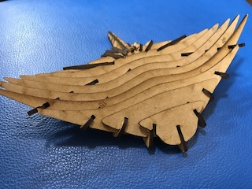
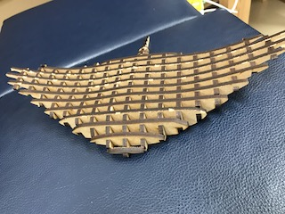
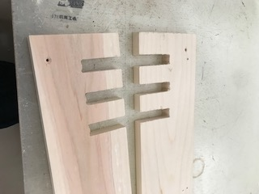
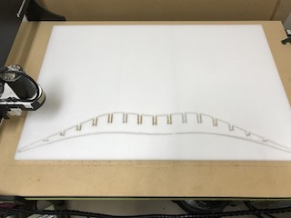
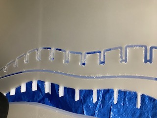

そうだ、エイに乗ろう。
・大きなエイの椅子を作りたい！
誰しも一度はエイに乗りたいものそんな夢を叶えたい！！
前回までのあらすじ

試作１号（レーザーカッター）

試作２号（レーザーカッター）

はめ込みテスト（木バージョン）※この時に仕上げ代のミスがあった
進捗状況
•本番の素材（PE）で切削を開始
まずは4枚あるうちの1枚を使ってはめ込みのテストを行った
その結果…試作と同じ0.1のオフセットが良いことがわかった（この間にちょっとした事件が発生したがそれは置いておこう）
そしてついに本番の切削と思いきや！？

問題発生！

ちゃんと下まで掘れていない
原因はタブを掘る時に下まで掘りきれていないこと
次の切削からは、「仕上げ代」とタブに注意して行うこととする
「焦り」
この調子でいくと、１日に２パーツ以上切削しなければ期限に間に合わない
早急に本番に取り掛かる